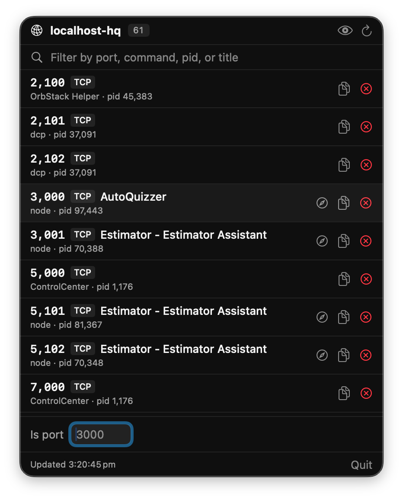

know what's on
:3000
A tiny macOS menu bar app that tells you which dev server is on which port. Scrapes the page title. Warns on conflicts. Kills what you don't need.

Juggling a dozen local dev servers is the new normal.
Which app is on 3000 right now? Is 5432 still taken by the Postgres container from last week?
What is this random port Rider keeps opening? localhost-hq
answers all of it at a glance, from your menu bar, without a single lsof invocation on your part.
Every dev server, one menu bar click away.
live port list
Every TCP listener, refreshed every 3 seconds. Port, command, pid — all visible without running lsof yourself.
page title scrape
Each port gets a quick GET /. If it's serving HTML, the page <title> shows up next to the port — so you read AutoQuizzer, not just node.
smart noise filter
Hides IDEs, Adobe, Orbstack, Slack, browser helpers, macOS daemons. But keeps anything actually serving HTTP — so a dev server running inside Rider doesn't disappear.
conflict warnings
Two processes on the same port? They get flagged in orange. No more "why isn't this working" staring at the terminal.
kill from the menu
Point at the rogue process, click, confirm. TERM or KILL — your call.
is port N free?
Type a port number, get the answer instantly. Tells you what's on it too, so you can go shut that down.
one-click hide
An eye-slash button on every row. See something noisy? Click once, it's gone from future lists.
open in browser
Anything with a scraped title gets a one-click opener. Straight from the menu bar to your running app.
zero dependencies
No sudo, no entitlements, no third-party frameworks. One Swift Package, builds with swift run.
Run it in two commands.
Requires macOS 14+ and Xcode command line tools.
$ git clone https://github.com/bradystroud/localhost-hq
$ cd localhost-hq
$ swift run